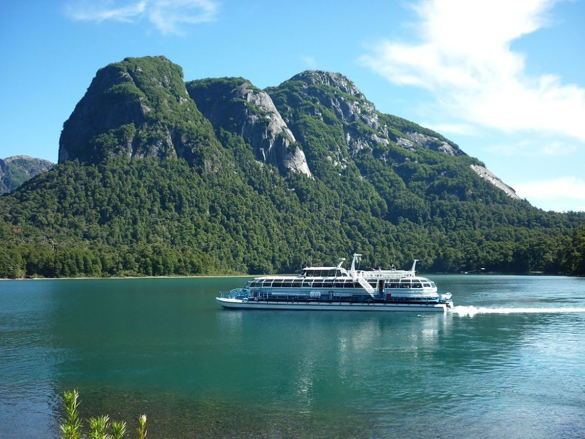
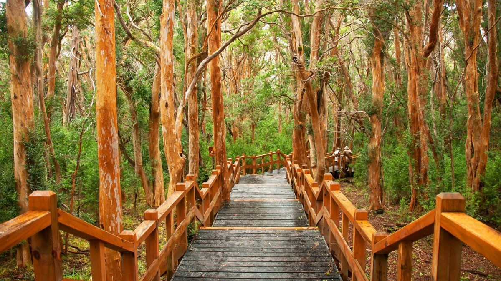
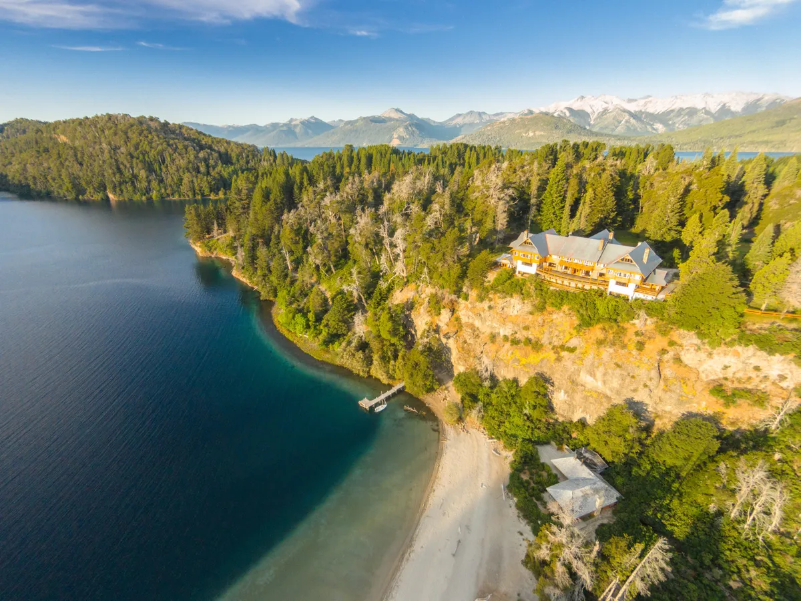

Atractivos de Isla Victoria
La Isla Victoria, anclada en el Lago Nahuel Huapi, ofrece una experiencia única. El viaje en barco revela vistas asombrosas de las montañas que rodean el lago. Una vez en la isla, el Bosque de Arrayanes cautiva con sus árboles de tono canela, creando un paisaje mágico. Caminar por los senderos sumerge a los visitantes en un cuento de hadas, mientras que el circuito histórico y el Museo de la Isla Victoria brindan una conexión cultural.
Navegación por el Lago Nahuel Huapi
Para llegar a la Isla Victoria, puedes embarcarte en una emocionante travesía en barco por el Lago Nahuel Huapi. Durante el viaje, disfrutarás de vistas panorámicas de las montañas circundantes y del propio lago.
Bosque de Arrayanes
En la Isla Victoria, podrás explorar el mágico Bosque de Arrayanes. Este bosque único alberga árboles de arrayanes con troncos de color canela, creando un paisaje encantador. Puedes caminar por senderos bien marcados para sumergirte en este entorno especial.
Fauna y Flora Local
La isla alberga una variedad de vida silvestre, incluyendo aves autóctonas. La oportunidad de avistar aves y explorar la flora local añade un componente naturalista a la visita, perfecto para amantes de la biodiversidad.